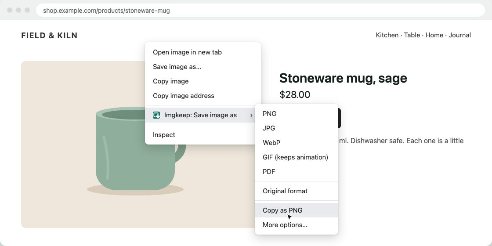

How to get an image from the web into Canva, Figma or Google Slides
Short answer
Right-click the image, choose Imgkeep, then Copy as PNG, and paste it with Ctrl+V (Cmd+V on a Mac). If a tool refuses the file, the site probably sent WebP or AVIF: save it as PNG or JPG instead. Canva and Figma list WebP but not AVIF; Google Slides and Docs list PNG, JPG and GIF.
Updated
What's the quickest way to get a web image into a design?
Copy it and paste it. There's no file to save, find and upload. With Imgkeep, the copy is always a PNG, whatever the site sent.
Our extension
Imgkeep › Copy as PNG
- Right-click the image and choose Imgkeep, then Copy as PNG.
- A small window opens for a moment while Imgkeep turns the image into a PNG and puts it on your clipboard, then it closes.
- Click into your design, slide or document and press Ctrl+V (Cmd+V on a Mac).

The PNG keeps any transparent background. WebP, AVIF and SVG images are converted too. If you've set a maximum width in Options, wider images are scaled down first; for one image, More options… lets you pick the width and copy from there. If the clipboard refuses the image, Imgkeep says so, leaves your clipboard as it was, and offers to save a PNG file instead. It only writes to the clipboard: it never reads it, and it doesn't ask for a clipboard permission. Conversion happens on your computer; nothing is uploaded.
Add Imgkeep to Chrome — free Works in Chrome 116 and newer. Also for Microsoft Edge. No uploads, no account.Isn't the browser's own "Copy image" enough?
Often, yes. Chrome's Copy image copies the picture as you see it, not the WebP or AVIF file, so many tools take it without complaint. Try it first. Two things can still go wrong:
- The web address comes along. Alongside the picture, Chrome puts a small piece of web page on the clipboard that points to the image's address on the site, so rich-text editors can show it. An app that uses that address instead of the picture loads the image from the site again, and then you're back to the site's WebP or AVIF file, or to a site that won't hand it over.
- Transparency depends on the app. Chrome copies a bitmap, and some apps, especially on Windows, can paste transparent areas as black or white.
Imgkeep's Copy as PNG puts only a PNG on the clipboard, with its transparency and no web address, so the app has exactly one thing to paste. Whether the transparency survives inside the app is still up to the app.
Why does it say the file type isn't supported?
Already have the file? Convert it in your browser, without uploading: WebP to PNG or AVIF to JPG, then download it or copy it as PNG and paste.
Because the site sent WebP or AVIF, and your browser saved exactly that, even if the address ended in .jpg (why Chrome saves images as WebP). Canva and Figma list WebP but not AVIF; Google Slides and Docs list only PNG, JPG and GIF. The fix is to save a format every tool takes:
- PNG for logos, icons, screenshots and anything with a transparent background.
- JPG for photos: smaller files, no transparency.
With Imgkeep, right-click the image, choose Imgkeep, then PNG or JPG, and upload that file. Without an extension, see how to save WebP as JPG or PNG or how to save AVIF as JPG or PNG. Renaming the file doesn't work: it's still WebP or AVIF inside.
What does each tool accept?
From each tool's own help pages, checked on 17 October 2026. "Not listed" means the format isn't on the tool's list, not that we tested it.
| Tool | Image formats it lists | WebP | AVIF | Best way in |
|---|---|---|---|---|
| Canva | JPEG, PNG, HEIC/HEIF, WebP; SVG separately. Under 50 MB and 250 million pixels. (Canva Help) | Still images only | Not listed | Upload a PNG or JPG (Uploads › Upload files). Canva's help describes uploading, not pasting images. |
| Figma | JPG, PNG, HEIC, WebP, GIF, TIFF (Safari only). Images over 4096 × 4096 pixels are scaled down. (Figma Help) | Yes | Not listed | Paste: Figma's help lists pasting from the clipboard as a way to add images. |
| Google Slides | .gif, .jpg or .png, under 50 MB (Google Docs Editors Help, for slide backgrounds); PNG, JPEG or GIF, under 50 MB and 25 megapixels (Google for Developers) | Not listed | Not listed | Paste: Google's help describes copying an image from a website and pasting it. Or upload a PNG or JPG. |
| Google Docs | PNG, JPEG or GIF, under 50 MB and 25 megapixels (Google for Developers) | Not listed | Not listed | Paste, as in Slides (Google Docs Editors Help). Or upload a PNG or JPG. |
Very large images can hit these limits. A maximum width in Imgkeep's Options scales wide images down as you copy or save them.
What if I can't right-click the image?
On sites like Instagram and Pinterest, photos sit under another layer, so the right-click never reaches them. Imgkeep's Find image here finds the photo for you: see when right-click won't save an image.
Can I use images I find on the web?
Saving or copying a photo doesn't give you the right to reuse it. Keeping a picture for your own reference, a mood board or a draft is one thing; publishing it, printing it or using it in your work is another. Ask the person who made it first, and credit them.
Related guides
- Why Chrome saves images as WebP
- How to save WebP as JPG or PNG
- How to save AVIF as JPG or PNG
- Chrome saves images as JFIF? How to get JPG
- How to save an animated WebP as a GIF
- How to save an image as a PDF in Chrome
- A safe alternative to Save image as Type
- When right-click won't save an image
Questions
Does Canva accept WebP images?
Yes, still ones. Canva's help lists JPEG, PNG, HEIC/HEIF and WebP images under 50 MB, and says only static WebP images are supported. AVIF isn't on its list, so save an AVIF as PNG or JPG before you upload it.
Can I paste an image from a website into Google Slides?
Yes. Google's help describes copying an image from a website and pasting it into a document, presentation or spreadsheet. If you upload a file instead, use PNG, JPG or GIF: those are the formats Google's documentation lists.
Does Copy as PNG read my clipboard?
No. Imgkeep only puts the PNG on the clipboard; it never reads what's there, and it doesn't ask for a clipboard permission. A small window opens for a moment to place the image, because the browser only accepts images from a window that's in front.